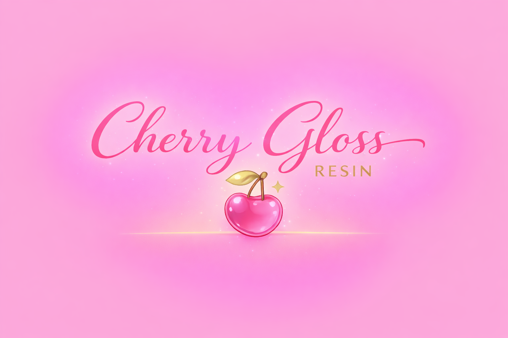

El presente trabajo explica la creación de Cherry Gloss Resin, una empresa dedicada a la elaboración y venta de productos artesanales hechos con resina epóxica, como llaveros, dijes, portarretratos y otros artículos personalizados. Esta idea surge como un proyecto emprendedor que busca convertir los conocimientos aprendidos en una empresa real, bajo el eslogan “La perfección de lo transparente”. El trabajo muestra cómo se diseña cada pieza para que represente recuerdos y emociones especiales, así como la organización del negocio y la manera en que se administra para que funcione correctamente. El propósito principal es crear y organizar formalmente la empresa, definiendo su estructura, las funciones de cada integrante, el cálculo de costos y las estrategias de venta para la región. Además, se busca que los integrantes desarrollen habilidades como la organización, la creatividad, la responsabilidad y la toma de decisiones, entendiendo cómo funciona un negocio desde su planeación hasta su venta al público. La meta es que Cherry Gloss Resin se convierta en una marca reconocida en el municipio por la calidad y originalidad de sus productos, transformando la creatividad en una oportunidad de crecimiento personal y económico. Para lograrlo, el trabajo desarrolla temas importantes como el concepto de la empresa, la organización del equipo, la asignación de responsabilidades y un análisis básico de mercado. También se incluye el cálculo de costos de producción, la fijación de precios y una estimación de ganancias. Asimismo, se propone la creación de una página web con una sección llamada “Diseña tu pieza ideal”, donde los clientes puedan elegir colores, frases y detalles personalizados. Todo esto se basa en valores como la calidad, la honestidad, la responsabilidad y el manejo seguro de los materiales. Finalmente, la empresa se fundamenta en las leyes que regulan el comercio en México, principalmente el Código de Comercio y la Ley General de Sociedades Mercantiles, que establecen las normas para el funcionamiento de las empresas. También se consideran las obligaciones fiscales ante el Servicio de Administración Tributaria (SAT), asegurando que el negocio opere de manera legal y responsable. De esta manera, Cherry Gloss Resin no solo busca ofrecer productos creativos y hechos a mano, sino también consolidarse como un emprendimiento formal que impulse el arte y el desarrollo económico en la comunidad.
Diseñar y ofrecer productos de resina epóxica personalizados, adaptados a cada mes y a fechas especiales, creando piezas únicas que permitan a nuestros clientes expresar emociones y regalar recuerdos significativos.
Convertir la resina epóxica en arte eterno, creando piezas que guarden historias, emociones y recuerdos especiales para nuestros clientes de la región.
Ser una microempresa reconocida en nuestro municipio y comunidades cercanas por la originalidad, calidad y creatividad de nuestras piezas de resina epóxica y consolidarnos como una marca confiable.
En Cherry Gloss Resin nos regimos por los siguientes valores fundamentales para asegurar la excelencia en cada pieza que creamos:
Cuidamos cada detalle del proceso, desde la mezcla hasta el acabado final, para garantizar piezas duraderas, brillantes y visualmente impecables.
Trabajamos con dedicación y pasión para transformar las ideas de nuestros clientes en creaciones únicas que reflejen su esencia y estilo.
Actuamos con seriedad y profesionalismo, cumpliendo los tiempos de entrega y utilizando los materiales de manera consciente y segura.
Mantenemos transparencia en nuestros precios, procesos y materiales, ofreciendo siempre lo que prometemos.
Valoramos la confianza de nuestra comunidad y buscamos construir relaciones duraderas basadas en respeto y satisfacción continua.
Aspiramos a destacar como un emprendimiento creativo que inspire a otros a convertir sus ideas en arte y oportunidades.
Priorizamos el manejo adecuado de la resina y sus componentes, garantizando un proceso seguro y productos aptos para uso decorativo.